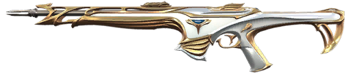
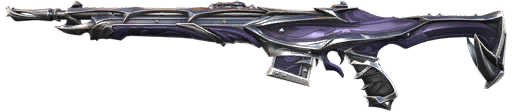
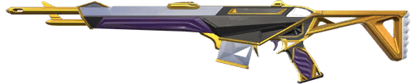
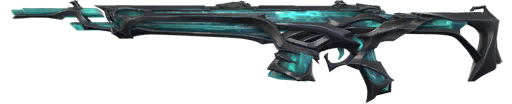
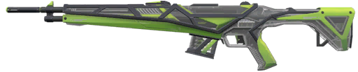
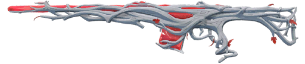
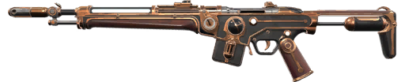
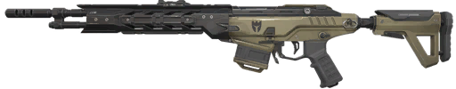
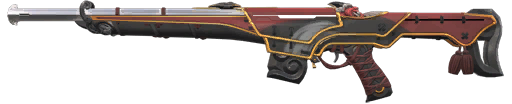
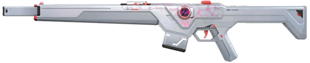

Community Favorite Skins

The Sovereign Guardian is known for its clean and elegant appearance. Featuring white, gold, and silver elements, it gives the weapon a divine and luxurious look. The bright visual effects and smooth audio make the skin feel refined and satisfying to use, especially for players who prefer a minimalist style.

The Reaver Guardian has a dark gothic style with glowing purple effects and a heavy, powerful sound. Its dramatic animations and strong visual identity make it one of the most iconic and popular Guardian skins.

The Prime Guardian is a classic fan-favorite with a clean gold design and one of the most satisfying “laser-like” shooting sounds. It feels simple, crisp, and consistent, which is why many players still call it one of the best Guardian skins.

The Ruination Guardian has a dark, corrupted design with glowing purple energy running through it. It feels powerful and aggressive, mainly because of its deep, heavy shooting sound and strong visual effects. Many players like it for making each shot feel impactful, especially when tapping for headshots.

The RGX Guardian has a futuristic RGB design with customizable colors and sharp animations. It feels modern and competitive, with a very clean shooting experience and satisfying visual feedback.

Gaia's Vengeance Guardian features a nature-inspired design with wood textures and glowing energy. Its unique tree-growing finisher and smooth animations make it stand out as one of the most creative skins.

Magepunk combines steampunk machinery with electric energy, resulting in a chaotic but visually interesting design. The glowing coils, sparks, and mechanical details make it feel energetic and slightly chaotic in a fun way. It appeals to players who enjoy more experimental and animated skins without going too flashy like cyberpunk designs.

Recon is one of the simplest skins in the game, designed with a realistic military aesthetic and no flashy effects. It is extremely popular among competitive players because it provides a clean, distraction-free experience. The lack of visual noise makes it ideal for players who want pure focus on aiming and positioning.

The Oni Guardian is inspired by Japanese demon mythology, featuring a red-and-black color scheme and a mask-like design. It has a strong cultural identity and a very bold visual presence in-game. Players often like it because it feels aggressive and stylish at the same time, with a distinct finish animation that enhances its personality.

The Spectrum Guardian is a clean, modern skin with colorful lighting and music-based effects from its collaboration with Zedd. It has smooth shooting sounds and a unique inspect animation that plays music, making it feel stylish and different. Players like it for its balanced mix of clean visuals and fun design.